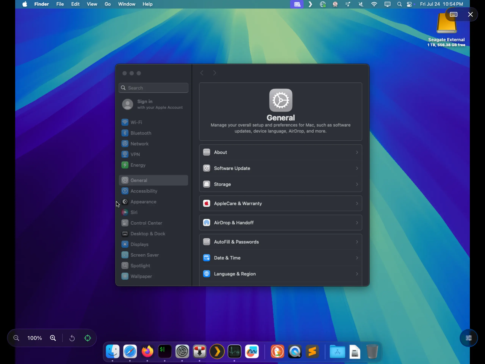
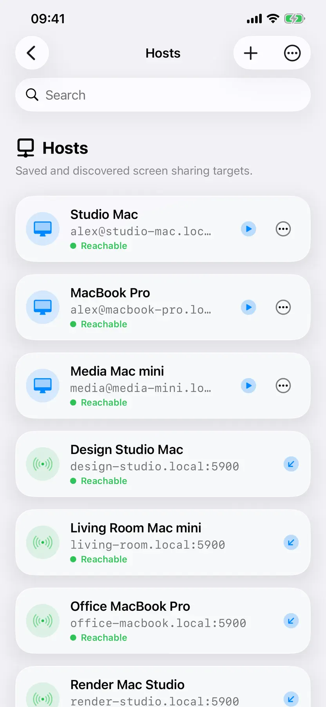
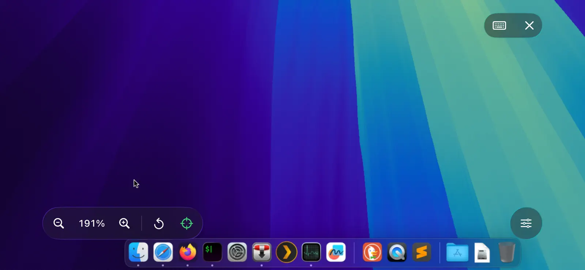

Your shortcuts.
Still second nature.
Type with the onscreen or hardware keyboard. Command, Control, Option, and your familiar shortcuts are all here.
Glassy Desk for iPad and iPhone
A beautiful way to feel right at your Mac.
From your iPad or iPhone.
Free to try. More time with Pro.


Familiar. In a whole new way.
Check in on a task. Make one last change. Reach for your Mac without reaching for your desk.
There you are.
Open Glassy Desk and find the Macs around you. Save the ones you love, then get back to them without starting from scratch.
Nearby discovery. Saved connections.
All in one very good-looking place.
A change of scenery.
Your apps, your windows, your familiar desktop. Glassy Desk opens a window to your Mac using the Screen Sharing already built into macOS.
No extra Mac app to install.
Just a connection to the Mac you know.
It comes naturally.
Tap to click. Drag to move. Pinch for a closer look. Choose direct touch or use your screen as a trackpad for more precise control.
Your gestures, thoughtfully translated
for the desktop.

Type with the onscreen or hardware keyboard. Command, Control, Option, and your familiar shortcuts are all here.
Keep recent sessions and per-Mac preferences close. After a brief network interruption, automatic reconnection helps you get back.
Connect to a saved Mac with Siri, or make Glassy Desk part of your routine with the Shortcuts app.
Personal, by design.
Your remote session goes directly between your device and your Mac. No cloud relay in the middle.
Our approach to privacyConnect with your Mac’s credentials. There’s no Glassy Desk account to create or another password to remember.
Saved computers and recent sessions sync across your devices through your private iCloud database.
Passwords you choose to save are protected in the Keychain and encrypted in your private iCloud storage.
A simple hello.
Your Mac already has what it needs.
Here’s how to bring it a little closer.
On your Mac, open System Settings → General → Sharing. Turn on Screen Sharing and choose who can connect.
Open Glassy Desk on the same network. Pick a nearby Mac, or add its address manually if you’re connecting through a VPN.
Sign in with an authorized Mac account. Save the connection, settle in, and make yourself at home.
Keep your Mac awake and reachable, or configure Wake-on-LAN on a supported network. For access away from home, use a trusted VPN.
No companion app is needed. Glassy Desk works with the classic Screen Sharing service built into macOS. Enable it in your Mac’s Sharing settings, then connect from your iPhone or iPad.
Yes, when a VPN makes your Mac reachable. Glassy Desk doesn’t provide a VPN or a cloud relay. Use a trusted network or VPN rather than exposing Screen Sharing directly to the internet. Session security depends on your server and network configuration.
You can try Glassy Desk with timed free sessions. Glassy Desk Pro removes the session time limit, with monthly, yearly, and lifetime options available in the app. Your local pricing and purchase terms are shown before you buy.
Glassy Desk is designed for iPhone and iPad running iOS or iPadOS 26 or later. It’s designed and tested for classic macOS Screen Sharing over VNC. Other standards-based VNC servers may work, but compatibility can vary.
Meet your Mac, wherever you settle in.
Put your Mac within reach. Try Glassy Desk for free.
Download on the App StoreFor iPhone and iPad. Requires iOS or iPadOS 26 or later.
Free sessions are timed. Glassy Desk Pro removes the session limit.